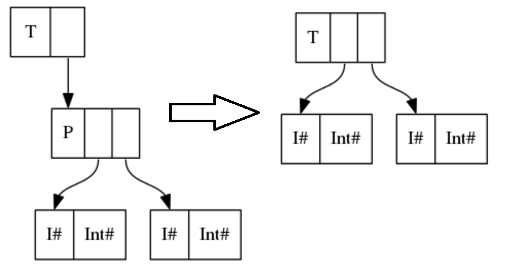

认真学语言可能就需要仔细读代码和了解各种语法和库函数吧
原本只是在看 Parallel and Concurrent programming，结果看到一个 example 发现好多语法和库函数还不会，看来还是不够了解 Haskell 语言。
趁此机会正好踏实地一点一点看一下，看懂了还是觉得有的实现挺奇妙的，一行信息量更比六行多。
# KMeansCore
首先是 KMeansCore module，代码如下：
1 | -- |
-
关于程序头部的
1
实际上是 Haskell 的一个
pragma system，可以起到对编译器提供额外语言信息的作用。通用语法为：1
一般的 pragma 如果忽略是不影响程序编译运行的，但是
LANGUAGEprogram 稍有特殊，但它的作用仍然是声明接下来写的语言是怎样的。而在 GHC 的手册上可以查到不同的 pragma 的作用：https://downloads.haskell.org/~ghc/8.4.3/docs/html/users_guide/glasgow_exts.html
-
关于类型声明中，出现了 "!" 感叹号。由于 Haskell 是 lazy evaluate 的，你声明一个变量 p = Point (3+4) 5 的时候，表达式（3+4）是不会被计算的，直至必须的时候（譬如 print (show p) 的时候）。这样会有一个问题就是和我们的习惯不同，如果你不断声明就会导致非常占用内存，我们有时是希望他 urge evaluating 的，就一开始就把表达式值算出来。
所以使用了感叹号标记的
!Int后，就可以满足我们的要求。然后会发现这里也出现了 pragma：
1
实际上，我查到
1
data Point = Point !Double
是一种非常严格和标准的写法。见问题：“Why is it common to mark record fields with UNPACK and strictness?”
其中
UNPACKpragma 的作用可以用一个例子解释：
上左图是声明
1
2data P = P !Int !Int
data T = T P的情况，右图是声明
1
2data P = P !Int !Int
data T = T !P的情况，本质上还是为了不要因为 type constructor 嵌套太多层，导致占用大量内存。
-
关于 type class
NFData，在 Hoogle 上的解释为A class of types that can be fully evaluated.
就是可以完全推算出值的一组数据类型，实际上我们常用的和能想到的都满足。它只要求一个方法：
1
rnf::NFData a => a -> ()
rnf 应该是 “reduce to normal form” 的简称，该方法实际上就是要求你给出怎么把该数据类型规约成 normal form。譬如
1
2
3
4data Pair = Pair Int Int
instance NFData Pair where
rnf (Pair a b) = (rnf a) `seq` (rnf b)上述代码的意思为 “要规约 Pair 类型，即先规约 Pair 的第一个 Int，再规约 Pair 的第二个 Int”。同时也表达了 “当 Pair 类型的两个 Int 参数都是 normal form 时，我们认为这个 Pair 类型也是 normal form”。
而在原代码中，由于使用了 “！” 标记，即该 Double 本身就已经被 urge evaluate 了，所以注释写了 “all fields are strict”，故声明的 Point 类型实例均为 normal form，用代码表示就是：
1
rnf _ = ()
-
关于 type class
Binary。Hackage 上查到的说明为：Binary serialisation of Haskell values to and from lazy
ByteStrings. The Binary library provides methods for encoding Haskell values as streams of bytes directly in memory. The resultingByteStringcan then be written to disk, sent over the network, or further processed (for example, compressed with gzip).The
binarypackage is notable in that it provides both pure, and high performance serialisation.而需要我们实现的方法是：
1
2put :: t -> Put
get :: Get t就是让我们实现一组编码 / 解码的方法。其中系统已经帮我们实现好了 Int 类型的编码 / 解码方法（具体怎么做的我也不知道，打印出来目测是大端法不知道咋编的），所以如果我们想对 Point 类型编码 / 解码，实际上就是对 Point 的两个 Int field 进行编码 / 解码，而 Put，Get 都是 Monad，故有了原代码中的写法。
实现了 put 和 get 后，就可以使用下面两个函数：
1
2encode :: t -> ByteString
decode :: ByteString -> t类型签名我写的比较随意严格来说不是这个，但不影响理解。其中
ByteString类型介绍如下：A time- and space-efficient implementation of byte vectors using packed Word8 arrays, suitable for high performance use, both in terms of large data quantities and high speed requirements. Byte vectors are encoded as strict
Word8arrays of bytes, held in aForeignPtr, and can be passed between C and Haskell with little effort.实际上是通过某种编码，获得了比
String更高性能的表现。总之目前发现如果一个类型需要往文件中读写的话，实现一下 instance Binary 是很不错的。
-
关于
readFile等一系列文件操作。首先有
1
type FilePath = String
很好理解，就是文件目录就是个字符串，然后
1
readFile :: FilePath -> IO String
很朴素的函数，从文件中读东西就返回一个字符串，然后由于可能有 side effect 所以套了个 IO Monad。然后
1
lines :: String -> [String]
就是分行函数，把一个 String 按照分行符 “\n”，"\r\n" 分成多个 String。然后
1
words :: String -> [String]
就是根据制表符，空格等把一个 String 分成若干个单词。
然后后面会看到我们会把生成的点 encode 成二进制文件 “points.bin”，所以读出来后需要用
unpack函数解码一下。而 read 函数就比较常见了。 -
关于符号 "@"。其实是类似于同位语符号。形如如下声明：
1
p @ (Point a b)
实际上给了三个能用的变量：p, a, b，且 p = Point a b。
如果不这么写，可能 where p = XXX 后，还需要单独写一个函数来提取 Point 的 field，形如：
1
2
3
4
5getX :: Point -> Double
getX (Point X Y) = X
getY :: Point -> Double
getY (Point X Y) = Y就很麻烦，然后用 "@" 后就没事了，就可以直接 where p @ (Point a b) = XXX 然后直接用 a 和 b 了。
-
关于
foldl'函数。我们先考虑foldl和foldr的区别，它们的类型签名都是：1
2foldl :: Foldable t => (b -> a -> b) -> b -> t a -> b
foldr :: Foldable t => (b -> a -> b) -> b -> t a -> b最常用的 t 当然就是列表 “[]”。而
1
foldl f initial [a]
实际上就是给一个初始值 initial，然后把他和列表 [a] 中所有元素都一个一个作 f 运算，最后返回一个结果。譬如：
1
foldl (+) 0 [1,2,3]
就是初始值是 0，然后把列表元素一个一个加到 0 上。
而
foldl和foldr的区别就是这个函数的实现，目的都是相同的：1
2foldl f i (x : xs) = foldl f (f i x) xs
foldr f i (x : xs) = f i (foldr f x xs)仔细理解下就会发现，foldl 想法是把 initial value 和列表元素第一个作运算后，放入列表里继续 fold；
foldr 是先把剩余的列表都 fold 了，再和 initial value 作运算。
那么
foldl'是什么呢？看他的实现就是：1
foldl' f i (x : xs) = let z = (f i x) in z `seq` foldl' f z' xs
就是强迫进行 urge evaluating。如果用 foldl，那么 (f i x) 的值并不会算出来，而是保留一个表达式，但是用 foldl’实际上就会强迫先算出 (f i x) 的值，再进行下一步 fold。
举个例子：
1
foldl (+) [1,2,3,4,5] = ((((1 + 2) + 3) + 4) + 5)
但用 foldl’就不会那么多层嵌套，而是算出一个值再计算下一个，可以有效避免 stack overflow 的问题。其实能用 foldl’都用就好了。

# GenSample
然后是 GenSample module，代码如下：
1 | module GenSample where |
-
关于
getArgs函数，类型签名为：1
getArgs :: IO [String]
如果 main 函数为：
1
2
3
4main = IO ()
main = do
args <- getArgs
print args那么用 cabal 运行时，可以有如下命令：
1
cabal new-run Kmeans-parallel -- 1 2 3
其中
Kmeans-parallel是项目名，也是.cabal 文件中的 executable。而’–' 后面的内容就表示往可执行文件里传的 arguments。就相当于：
1
./Kmeans-parallel 1 2 3
而
getArgs函数就可以获取到后面的 arguments 然后返回 “1 2 3” -
关于随机数生成种子。有函数：
1
2mkStdGen :: Int -> StdGen
setStdGen :: MonadIO m => StdGen -> m ()不知道具体用法，本质上就是在设置随机数生成种子。
1
randomRIO :: (Random a, MonadIO m) => (a, a) -> m a
用法就是输入一个上下界，然后返回一个范围内随机值。然后 Int 和 Double 啥的都是 Random 的 instance，故随便用。
1
randomRs :: (Random a, RandomGen g) => (a, a) -> g -> [a]
用法就是可以多传一个随机数种子进去，譬如如下用法：
1
randomRs (1, 10) (mkStdGen 0725)
就是可以的，但是会返回一个无限长的随机数列。实际中往往需要利用 lazy evaluating 的特性，用法如下：
1
take 10 $ randomRs (1, 10) (mkStdGen 0725)
就会返回一个长度为 10，范围在 1~10 之间的随机数列。
-
关于
replicateM函数。首先 replicate 函数很好理解：1
2
3replicate :: Int -> a -> [a]
replicate 3 True = [True, True, True]就是把一个值重复若干遍。但
replicateM后面那个 M 的意思实际上是 Monad 的意思：1
replicateM :: Applicative m => Int -> m a -> m [a]
这里要考虑下 Monad 的含义了。我们有两种说法：Monadic action 和 Monadic value。像
Maybe这样的 Monad，我们就把它全看作是 Monad value，因为它没有 side effect。而
IOMonad 就不一样，一方面它可能有返回值譬如IO String，那么那个 String 就体现了其 Monadic value 的一面；另一方面它可能有 side effect，譬如往控制台读写内容，这就体现了其 Monadic action 的一面。所以我们也用 do-notation 作为 monad 的一个语法糖，即可以看作是完成了一系列动作。常用的：
1
2main = IO ()
main = do ...就表明 main 函数我们不关心其返回值（记为
IO ()）而只关心他做了什么，即用 do-notation 表示。而
replicateM实际上就是把后面的 m a 的 Monadic action 重复做若干次，然后把 Monadic value 返回一个数组。譬如 replicateM 3 main 的返回值实际上就是 IO [(), (), ()]。
如果实在不关心返回值，只关注 action，也可以使用：
1
replicateM_ :: Applicative m => Int -> m a -> m ()
这在后面介绍
mapM和mapM_时是一样的。
# Kmeans
这部分是最关键的，代码如下：
1 |
|
-
关于
Data.Vector。感觉上就像类似 C++ 里的 STL，vector。但是 Haskell 里的 Vector 有多种属性，可以分为 Boxed 和 Unboxed，mutable 和 immutable 等。可以看到原代码也引用了Data.Vector.Mutable，即可变 Vector。首先看一下我查到的解释：There are two different varieties of vectors: immutable and mutable. Immutable vectors (such as provided by the
Data.Vectormodule) are essentially swappable with normal lists in Haskell, though with drastically different performance characteristics (discussed below). The high-level API is similar to lists, it implements common typeclasses likeFunctorandFoldable, and plays quite nicely with parallel code.By contrast, mutable vectors are much closer to C-style arrays. Operations working on these values must live in the
IOorSTmonads (seePrimMonadbelow for more details). Concurrent access from multiple threads has all of the normal concerns of shared mutable state. And perhaps most importantly for usage: mutable vectors can be much more efficient for certain use cases.简单地理解可以认为 immutable 的 Vector 就和普通的 List 的是一一对应的，它是一种不支持改写的数据类型。而 mutable 的 Vector 是支持随机读写的，但是需要套在一个 Monad 里，可以认为写入 / 修改操作是一个 Monadic action，且会导致该操作前后读到的内容不同。即破坏了纯度 pure。（否则一个变量一旦绑定后，无论多少次作为纯函数的输入，输出都是一样的）而在多线程中，mutablke vectors 是可以多个线程修改的，且效率高很多。看一个例子：
1
2
3
4
5
6
7
8>>> import qualified Data.Vector as V
>>> import qualified Data.Vector.Mutable as MV
>>> mv <- V.thaw $ V.fromList ([10, 20, 30] :: [Integer])
>>> mv' <- MV.grow mv 2
>>> MV.write mv' 3 999
>>> MV.write mv' 4 777
>>> V.freeze mv'
[10,20,30,999,777]其中 thaw 函数就是将一个 vector 生成了对应的 mutable 版本，然后 grow 是用来增长长度，write 用来写，freeze 就是把 mutable 的再冻结成 immutable 的。
而原代码使用的
MVector.replicate也是就是将后面的元素重复若干次，形成一个 mutable vector。 -
关于比较的东西，首先有
Orderingtype，它只有三个常数值：LT, EQ, GT。就是小于，等于，大于。然后看下 compare 和 minimumBy 的类型签名：1
2compare :: Ord a => a -> a -> Ordering
minimumBy :: (a -> a -> Ordering) -> Vector a -> a实际上就是给了偏序类的元素一个比较函数，以及给出一个比较函数就能得到 Vector 里的最小值，然后下面这个写法很有意思
1
2
3(compare `on` snd) :: Ord a1 => (a2, a1) -> (a2, a1) -> Ordering
on :: (b -> b -> c) -> (a -> b) -> (a -> a -> c)
(.) :: (b -> c) -> (a -> b) -> (a -> c)就是 on 这个函数，可以认为是把一个函数变成了另一个（额废话），有点像二元的（.)。
原代码中的 nearest 函数，实际上就是找点 p 最近的一个 cluster。
-
关于
$!符号，实际上是个非常严格的符号，即：1
f $! x = x `seq` f x
即先 urge 地把 x evaluate 了，再送入 f。
-
关于
mapM和mapM_。首先mapM可以看作map的扩展。考虑到类型签名：1
2map :: (a -> b) -> [a] -> [b]
mapM :: (a -> m b) -> t a -> m (t b)就是
mapM实际上是输入一个类型为 a -> m b 的 Monadic action，然后对 t a 中每个值都作用一次，然后返回一组 Monadic value 返回值。譬如：1
2
3
4
5>>> mapM (\s -> do print 3; return (s + 1)) [1, 2, 3]
3
3
3
[2,3,4]就做了三次 Monadic action，返回了 monadic action 后的值。
然而类似
replicateM_，有时我们不关心 Monadic value，即返回是 [(), (), ()] 时，就可以使用mapM_，直接不返回 Monadic value，只重复 Monadic action：1
2
3
4>>> mapM_ (\_ -> do print 3) [1, 2, 3]
3
3
3然后原代码中，assign 函数中的子函数 addpoint 实际上类型是 Point -> m ()，就是一个完全的 Monadic action，作用就是把输入的 Point 加到离他最近的一个 Cluster 里。
-
关于
makeNewCluster中的 zip 写法：1
zip [0 ..] (Vector.toList vec)
其中，[0 …] 是个无限长的 List，然后很好地利用了 zip 函数和 lazy evaluating 的特点，给后面的 vector 也标了个序号。
然后形如：
1
2
3
4let loop = do
....
in
loop n clusters也是个写循环的很经典的写法。
-
看到
assign函数的作用实际上是给出 clusters 的数量，然后一个 Clusters 的 List，一个 Point 的 List，然后返回一个长度为 clusters 数量的 Vector PointSum。就是把 Points 分类到 clusters 里，然后加到 clusters 里。一个 PointSum 就是一个 point 的集合全加起来。最主要就是下面这行代码：1
mapM_ addpoint points
然后这就是我们考虑 parallel programming 的地方。
一个基本的想法就是把 points 划分成若干个 chunks，然后分别在各个 chunks 上进行 mapM_操作。然后原代码中的
chunk函数就是在进行划分 chunks 这个操作。然后
kmeans_strat函数和kmeans_seq函数不同之处就在于调用的是parSteps_strat函数。在
parSteps_strat函数中，map 操作使用了：1
map (assign nclusters clusters) pointss `using` parList rseq
就是在 parallel 地把 nChunks（chunks 的个数）个 point 集合都 assign 了，然后再合并起来。
foldr1函数和foldr函数的唯一区别就是不需要提供初始值，默认列表第一个就是初始值。
# 实验和表现：
# 生成数据
写 Main 里的 main 函数：
1 | module Main where |
然后输入：
1 | cabal new-run Kmeans-parallel -- 5 500000 100000 1010 |
就生成了 50000~100000 个随机点，随机数种子是 1010，然后随机生成了 5 个初始 cluster。
# 无并发情况
注释掉 main 函数里：
1 | main :: IO () |
输入
1 | cabal new-run Kmeans-parallel -- seq |
17 次迭代后结果如下：
# 双核 parallel
注释掉 main 函数里：
1 | main :: IO () |
输入（64 代表分成 64 个 chunks）：
1 | cabal new-run Kmeans-parallel -- strat 64 +RTS -N2 -l |
17 次迭代后结果如下：
线程运行情况如下：
# 三核 parallel
注释掉 main 函数里：
1 | main :: IO () |
输入（64 代表分成 64 个 chunks）：
1 | cabal new-run Kmeans-parallel -- strat 64 +RTS -N3 -l |
17 次迭代后结果如下：

线程运行情况如下：

# 四核 parallel
注释掉 main 函数里：
1 | main :: IO () |
输入（64 代表分成 64 个 chunks）：
1 | cabal new-run Kmeans-parallel -- strat 64 +RTS -N4 -l |
17 次迭代后结果如下：

线程运行情况如下：

我这后面核多了也没啥提升了 hhh